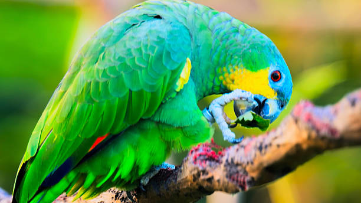
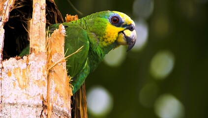

Yellow Naped Parrots come from the southern mexico to northern side of Costa Rica. They're usually found in the canopy and borders of deciduous and gallery forests, as well as open grasslands with sparse tree coverage. They are not as commonly found in secondary forests and cultivated land.
Yellow Naped Parrots may eat a wide variety of fruits and nuts. They normally feed quietly in the higher parts of trees. they often feed on the fruits and seeds of the poro poro, raspaguacal, terminalia as well as fruits and buds of the guanacaste tree. They also feed on the seeds of the guapinol, and the fruits of the guayacan, and the flowers of the corteza amarilla.
Parrots are also quite dextrous with their feet, usually grabbing big fruit or seeds with one foot while standing on the other and munching down with their beak.
The Yellow Naped Parrots have a social nature and are often seen in groups. They are known for their intelligence and ability to mimic human speech. Yellow Naped Parrots are also known for favoring one foot over the other. These parrots are also known to be very playful and enjoy interacting with their environment. Another interesting behavior of the Yellow Naped Parrot is their ability to use tools. Yellow Naped Parrots have been seen using sticks to take insects out of tree bark and using leaves to cover their food.

Yellow Naped Amazon Parrots are recognized to have regional dialects that span the entirety of their calls. According to the study done by the Lafeber Company, male and female Yellow Naped Amazon Parrots have different vocalizations. Males are more likely to use a "growl" sound, while females are more likely to use a "squeak" sound. The study also found that males are more likely to use a "squeak" sound when they are in the presence of a female, while females are more likely to use a "growl" sound when they are in the presence of a male. This suggests that the vocalizations of Yellow Naped Amazon Parrots are influenced by the presence of other parrots in their environment.
Yellow Naped Parrots are large, green birds with a distinctive yellow patch on their neck. They have a red face and a black beak. Their wings are mostly green with blue and yellow feathers. They have a long tail and strong legs, which they use for climbing and perching. From head to its tail, this parrot reaches a length of 15-27 inches (38-43 cm).
Human activity such as deforestation and habitat destruction pose the most significant threats to Yellow Naped Parrot populations, resulting in a loss of suitable nesting and foraging sites. illegal trapping and trade of these parrots for the pet trade has also pose a massive threat to this species. Conservation efforts are crucial to protect their habitats and regulate the pet trade to ensure the survival of this species in the wild.
While breeding, they nest in hollow tree cavities where two to three eggs are laid and incubated for 25-28 days by the female While the female incubates the eggs, the male feeds her through regurgitation. The chicks are reado to leave the nest when they are still young. (8 to 12 weeks old) and are fed by their parents for another 4 to 6 weeks. In the wild, Yellow Naped Parrots can live up to 50 years, while in captivity they can live up to 60 years.
Yellow-headed Amazon parrots are endangered in their natural habitat due to habitat loss and collecting for the pet trade. there are an estimated 10,000 to 20,000 individuals left in the wild. Conservation efforts are being made to protect their habitats and regulate the pet trade to ensure the survival of this species in the wild.
| Phylum | Chordata |
|---|---|
| Class | Aves |
| Order | Psittaciformes |
| Family | Psittacidae |
| Genus | Amazona |
| Species | auropalliata |
| Subspecies | auropalliata |